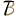

<!-- <nav class="navbar navbar-expand-lg navbar-default">
    <a class="navbar-brand" href="#">Logo</a>
    <button class="navbar-toggler" type="button" data-toggle="collapse" data-target="#navbarSupportedContent" aria-controls="navbarSupportedContent" aria-expanded="false" aria-label="Toggle navigation">
      <span class="navbar-toggler-icon"></span>
    </button>

    <div class="collapse navbar-collapse" id="navbarSupportedContent">
      <ul class="navbar-nav mr-auto">
        <li class="nav-item active">
          <a class="nav-link" href="#">Home <span class="sr-only">(current)</span></a>
        </li>
        <li class="nav-item">
          <a class="nav-link" href="#">Link</a>
        </li>
      </ul>
      <form class="form-inline my-2 my-lg-0">
        <input class="form-control mr-sm-2" type="search" placeholder="Search" aria-label="Search">
        <button class="btn my-2 my-sm-0" type="submit">Search</button>
      </form>
    </div>
</nav> -->
<header class="tada-container">

  <nav class="menu-desktop menu-sticky">
    <div class="header-content-area">
      <div class="{{ token ? 'auth-logo' : 'logo' }}">
        <span [routerLink]="['/dashboard']">SkyGram</span>
      </div>
      <div *ngIf="token" class="tada-search">
        <form>
          <div class="form-group-search">
            <input type="search" class="search-field" placeholder="Search">
            <button type="submit" class="search-btn" hidden><i class="fas fa-search fa2x"></i></button>
            <div class = "toTheRight">
                <div class = "avatarFrame dropdown">
                  
                  <div class="dropdown-content">
                      <a [routerLink]="['/user']">Profile</a>
                      <a (click)=logOut()>Log out</a>
                  </div>
                </div>
            </div>
          </div>
        </form>
      </div>
    </div>
  </nav>
</header>
